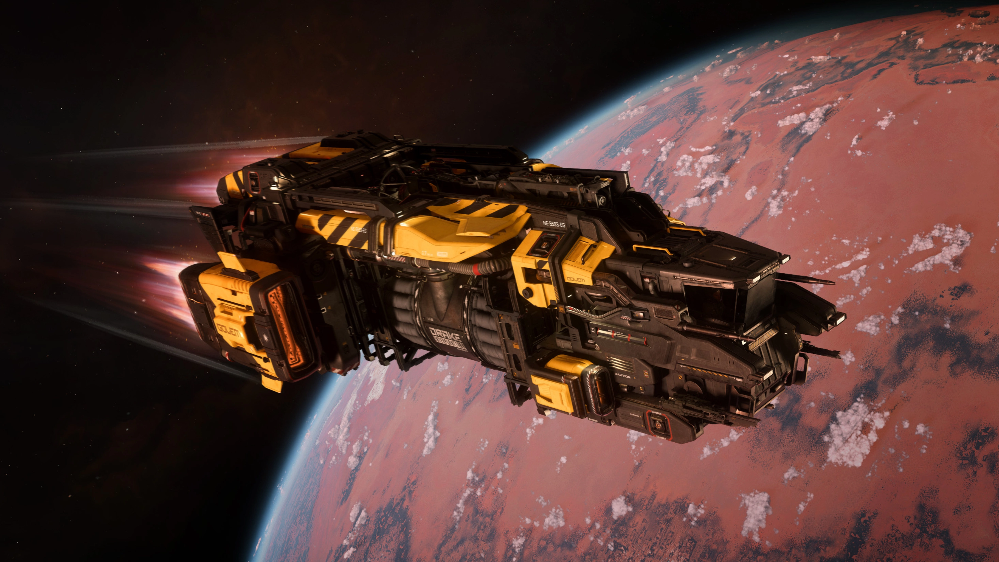

GENERAL
El Golem es una pequeña nave minera de nivel básico desarrollada por Drake Interplanetary. Es una embarcación ejemplar, diseñada para quienes aspiran a iniciar una carrera minera. Esta nave está equipada con un láser de minería personalizado y tiene la capacidad de transportar 32 SCU de materiales preciosos en dos contenedores propietarios de 16 SCU. Fiel a la filosofía de diseño de Drake, innecesarios.Gólem
LÁSER
El láser minero Pitman tamaño 1, hecho a medida para la nave, está destinado a quienes comienzan una carrera minera. Ha sido cuidadosamente calibrado para garantizar su facilidad de uso y reducir la probabilidad de accidentes graves
CARGA
El Golem es capaz de alojar dos contenedores desmontables de 16 SCU diseñados para almacenar tu mineral de minería.
ALMACENAMIENTO
Además de su compartimento interno de almacenamiento de 900K SCU, el Golem está equipado con estantes diseñados para alojar armas y objetos utilitarios.
ARMAS
El vehículo está equipado con un par de cañones tamaño 1 y un par de misiles tamaño 1, lo que garantiza que no esté sin defensa.
ESPECIFICACIONES TÉCNICAS
Especificaciones actuales de la nave y estas pordian cambiar mas adelante
Longitud
7m
Altura
5m
Ancho
15.5m
Velocidad
203 m/s
Armas
2x Talla 1
Misiles
2x Talla 1
Torretas
N/A
Carga